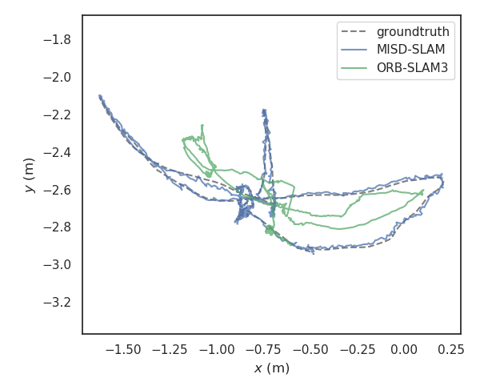
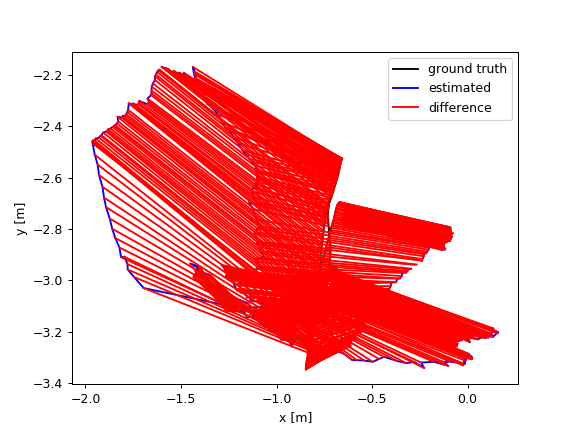
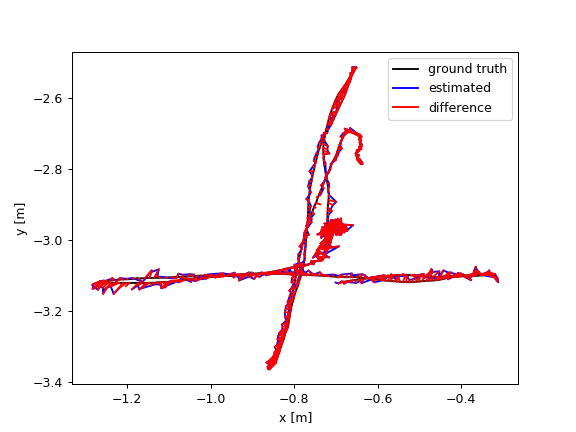
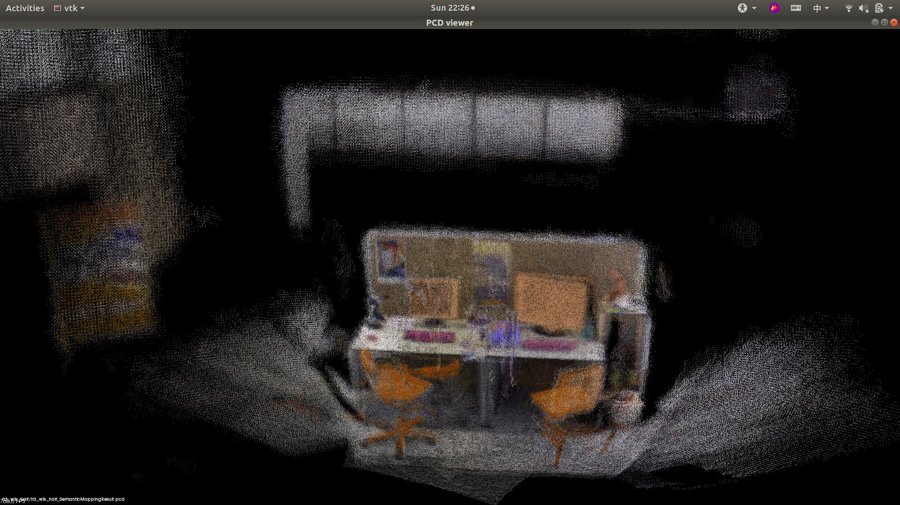
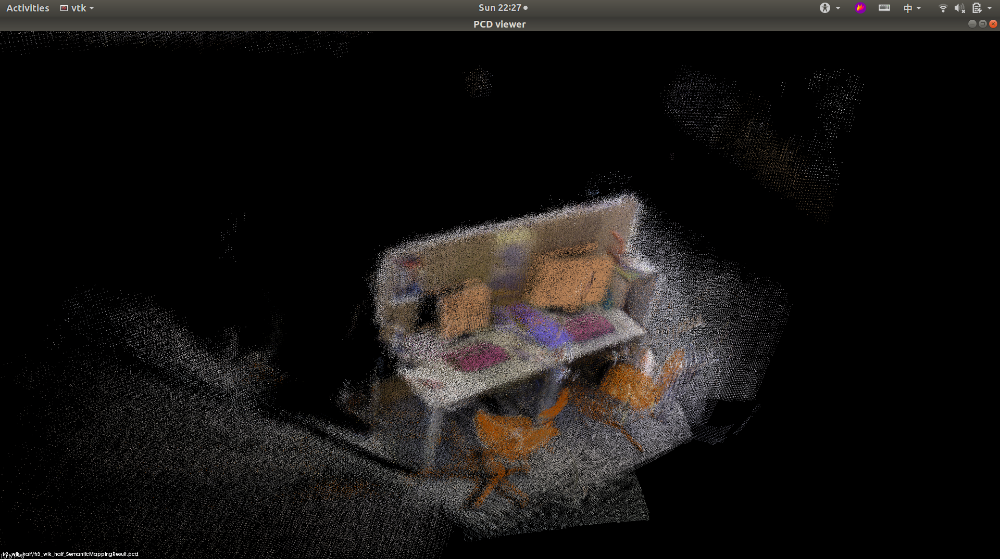
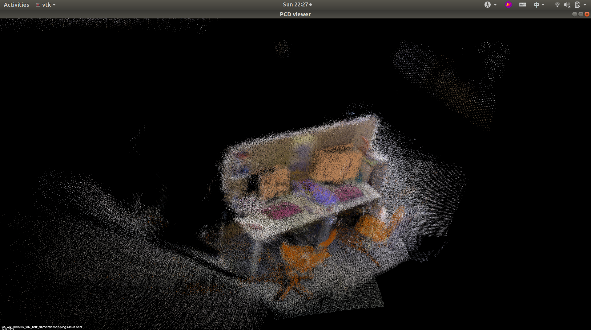

语义建图性能评估
四月 20, 2021
MISD-SLAM预测轨迹与ground truth对比
1.利用EVO工具评估
（1）安装evo工具
1 | pip install evo --upgrade --no-binary evo --user |
（2）拷贝MISD_CameraTrajectory.txt、ORBSLAM3_CameraTrajectory.txt和groundtruth.txt早评估文件夹下
（3）轨迹对比
1 | evo_traj tum MISD_CameraTrajectory.txt ORBSLAM3_CameraTrajectory.txt --ref=groundtruth.txt -as --plot --plot_mode xy |
得到三条轨迹对比结果：

可以看到，动态物体剔除很大程度上提高了SLAM轨迹预测的准确度。
（4）计算绝对位姿误差
1 | evo_ape tum groundtruth.txt MISD_CameraTrajectory.txt -p --plot_mode=xy -as |
（5）计算相对位姿误差
1 | evo_rpe tum groundtruth.txt MISD_CameraTrajectory.txt -p --plot_mode=xy -as |
2.利用TUM RGB-D评估工具
（1）下载测评工具
https://svncvpr.in.tum.de/cvpr-ros-pkg/trunk/rgbd_benchmark/rgbd_benchmark_tools/
（2）运行evaluate_ate.py
1 | python evaluate_ate.py groundtruth.txt ORBSLAM3_CameraTrajectory.txt --plot ORBSLAM3_result.png |
可以看到：

MISD-SLAM建图效果
1 | pcl_viewer SemanticMappingResult.pcd -cam test1.cam |
MISD-SLAM通过将动态物体剔除，能够建立环境的静态地图，以下是在TUM RGB-D数据集的fr3_walking_halfsphere序列的建图效果。
 

查看评论